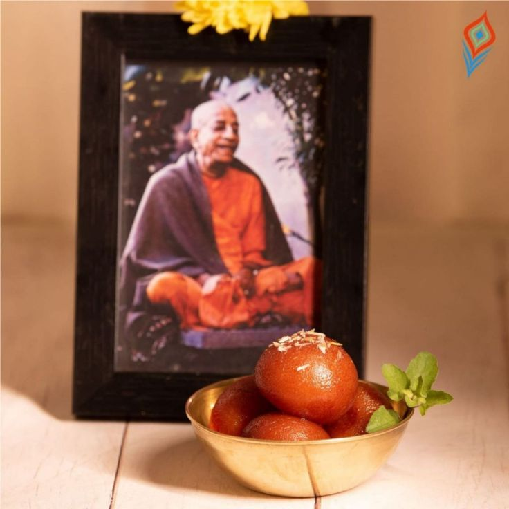

Ramakrishna mentally unstable paramhamsa

Few minutes ago I came across to a YouTube Short of that rascal mayavadi Chinmayānanda, in which he was describing an incident where another big rascal, Ramakrishna mentally unstable paramhamsa, started crying Gulab jamun! Gulab jamun! in the middle of his stupid discourse to his brain dead followers. To this incident, this big beard Chinmayānanda very mysteriously laughing, as if he was knowing that what he was going to say is completely nonsense but those who are listening they also have no intelligence. So, thinking "even if I pass stool, they will applaud for me for my brilliant art work.." Shamelessly he continues to speak and while explaining the above incident he says.
“Just like for us to get elevated to higher platform we need kirtan bhajan, he (RKP) also needs gulab jamun to come down to lower platform"
Listening to this I started laughing, why does a supposed spiritual authority needs to degrade his consciousness to preach the fallen souls, what is he exactly preaching? Spirituality or mundanity? And for this he is getting glorified by these pretending sadhus?
Well after wasting 10 minutes on this. My eyes suddenly erupted with tears after one thought. That these rascals used Gulab jamun for lowering their consciousness and cheating others, but on other hand Srila Prabhupada used gulab jamuns for elevating the dull consciousness of all sinful people. When after eating gulab jamun these rascals were intoxicated and cheating others, Srila Prabhupada made everyone chant Hare Krsna! After feeding them with gulab jamuns. What compassion! What real Divinity! Whatever he touched became so full of krsna's grace. How glorious he is! How glorious he is!.
HH Giriraj swami recalls in his book, watering the seed;
So in the beginning Srila Prabhupada encouraged the devotees to take more and more prasada. Anyone who visited him had to get a sweetball, and Srila Prabhupada’s were wonderful. He kept a jar of such golden balls suspended in gooey sugar water near the temple entrance, so if anyone wanted to leave Krishna consciousness, he would first have to pass the sweetballs. And definitely the person would think, "Before I go, let me take one more - or two or three or four." Most likely, he would realize the higher taste of Krishna consciousness and give up the idea of leaving altogether. Or he would become so full that he couldn’t move. In any case, Srila Prabhupada called sweetballs "ISKCON bullets - they shoot maya dead."
~Admin